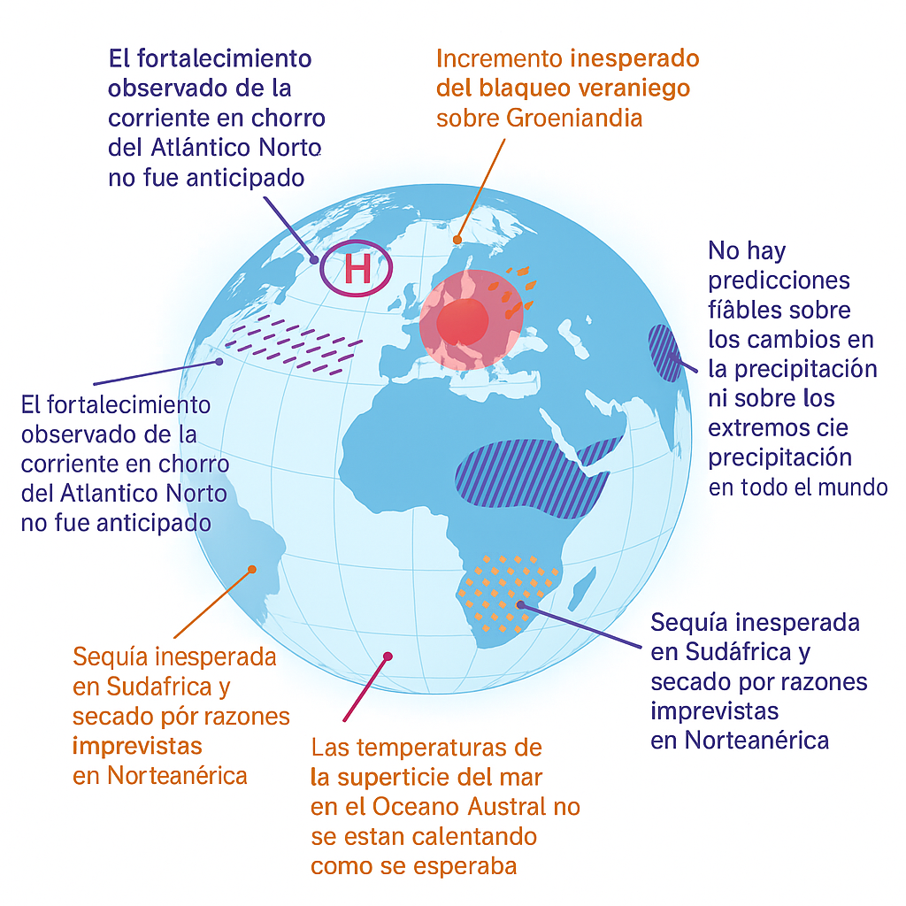

28 Evaluación de las predicciones climáticas
Desde hace décadas y gracias a la existencia de supercomputadores, los científicos del mundo han elaborado simuladores del clima de la Tierra, para poder predecir el clima futuro. El principal motivo ha sido la preocupación de la comunidad internacional sobre los efectos de la emisión de gases de efecto invernadero en el clima. El clima de la Tierra viene calentándose desde hace más de doscientos años, básicamente desde el fin de la pequeña Edad del Hielo, y resulta crucial determinar qué parte del calentamiento actual observado se debe a causas naturales y qué parte se debe a causas humanas.
Las simulaciones realizadas con estos modelos climáticos en supercomputadores muestran un gran consenso a la hora de determinar que el forzamiento antropogénico es el principal causante del calentamiento actual. ¿Pero qué ocurre con el resto de predicciones que están realizando los modelos?
Recientemente, se ha publicado un artículo en la revista Nature, llamado The other climate crisis (Nature, 26 de marzo de 2025) que aborda la problemática señalada. Según el artículo, el paradigma estándar de la ciencia del clima ha mostrado gran éxito en predecir señales globales de calentamiento. Sin embargo, no ha sido tan exitoso en las predicciones regionales, por lo surge la necesidad de revisar nuestras suposiciones y paradigmas de estudio del clima. Para profundizar, consulta The other climate crisis. Porque uno cosa es el calentamiento global de la Tierra y otra aspecto diferente son los distintos climas regionales Hace falta definir claramente, es, qué se entiende por clima de la Tierra, ya que en no existe un único clima, sino que existen múltiples climas dependiendo de la zona que estudiemos.
Un ejemplo de las discrepancias de los modelos señaladas por el artículo mencionado son The other climate crisis:
- Precipitación extrema: los modelos subestiman la intensidad y frecuencia de precipitaciones extremas en África Oriental y el Sudeste de América del Sur, reproduciendo tendencias más débiles que las observadas
- Circulaciones extratropicales: fallos en capturar la intensificación del chorro polar y ondas de Rossby globales, así como el aumento de bloqueos en latitudes medias
- Olas de calor: incapacidad de reproducir el rápido incremento de extremos de calor en Europa Occidental, debido a tendencias de circulación omitidas
- Sequedad estival: déficit en la simulación de la disminución de humedad relativa y aumento de sequías en regiones templadas, como el suroeste de EE.UU.
- Variabilidad interna y teleconexiones: discrepancias en la Oscilación del Atlántico Norte y el gradiente este-oeste del Pacífico Tropical, afectando proyecciones regionales a largo plazo

28.1 Ejemplo de sensibilidad de los modelos a las condiciones iniciales
Un caso concreto se observó en las simulaciones del modelo climático CESM2 (Community Earth System Model, versión 2)CESM2 Large Ensemble Community Project (LENS2). Los investigadores realizaron 3 simulaciones iniciales de control preindustrial, todas idénticas en su configuración física y parámetros, pero con una minúscula diferencia en el estado inicial de la atmósfera: una perturbación de apenas
\[ \Delta T \approx 10^{-14} \; \text{K} \]
Esta variación es tan pequeña que está muy por debajo de cualquier precisión instrumental. Sin embargo, tras dejar correr la simulación durante años, las trayectorias climáticas divergieron lo suficiente como para producir resultados regionales muy diferentes.
En 2 de las ejecuciones, el modelo desarrolló una cobertura de hielo marino excesiva en el Mar de Labrador (y en menor medida en el Mar de Ojotsk), comparada con las observaciones por satélite. Sin embargo, la tercera simulación —llamada 262c— no presentó ese exceso de hielo.
Esta simulación no era especial en ningún otro aspecto: su temperatura media global, el equilibrio energético y la circulación oceánica estaban dentro de la variabilidad normal del conjunto. La única diferencia real fue la trayectoria caótica que siguió el sistema a partir de esa pequeñísima perturbación inicial.
Este ejemplo ilustra de manera numérica cómo, en sistemas no lineales como el clima, pequeñas variaciones iniciales pueden llevar a estados regionales muy distintos, incluso cuando el promedio global parece estable. Es una demostración clara de que la incertidumbre en las condiciones iniciales, por diminuta que sea, puede tener consecuencias sustanciales en las predicciones a escala regional.
28.2 Otros fallos en las predicciones realizadas por los modelos
A lo largo de las últimas décadas, voces diversas —científicos, activistas, medios y organismos internacionales— han lanzado advertencias dramáticas sobre el futuro climático. Aquí tienes una selección de predicciones que no se cumplieron, cada una con su fuente como enlace clicable.
28.2.1 Refugiados climáticos y desertificación (2005 → 2010)
Predicción: En 2005, el PNUMA y la Universidad de las Naciones Unidas advirtieron que hasta 50 millones de personas podrían convertirse en “refugiados ambientales” para 2010, huyendo de desertificación, aumento del nivel del mar y desastres climáticos.
Realidad: Esa migración masiva no ocurrió; la ONU se distanció del pronóstico, retiró el informe, y las zonas señaladas como “críticas” vieron crecimiento poblacional.
Fuente ↗ | Reporte crítico ↗
28.2.2 Deshielo ártico prematuro (2009 → ~2013)
Predicción: En 2009, Al Gore, citando modelos científicos, afirmó que había una probabilidad del 75 % de que el Ártico quedara libre de hielo en verano en cinco a siete años.
Realidad: Aunque el hielo ha disminuido, no se ha desvanecido por completo en verano. La afirmación fue una interpretación exagerada de datos científicos.
Fuente ↗ | Análisis detallado ↗
28.2.3 Ralentización multidecenal del deshielo del Ártico (2005 → 2024)
Predicción: La literatura previa asumía una pérdida continuada del hielo estival y consideraba poco probables pausas largas: a 15 años ≈ 5 % y a 20 años ≈ 1–2 % en conjuntos CMIP5 (definiendo “pausa” como tendencia no negativa en septiembre).
Swart et al. 2015 ↗
Realidad: El análisis satelital 1979–2024 muestra ralentización sustancial y ausencia de tendencia estadísticamente significativa en la extensión de septiembre desde 2005. La “pausa” es robusta a varios datos/métricas y compatible con variabilidad interna del clima (caos); los modelos CMIP5/CMIP6 reproducen episodios así y sugieren que podría persistir 5–10 años, con riesgo de reaceleración posterior por encima de la media de largo plazo.
England et al. 2025 (AGU) ↗ | PDF ↗ | Resumen divulgativo ↗
En un sistema no lineal y caótico, pequeñas diferencias iniciales pueden amplificarse en días-semanas y, a través del acoplamiento océano–hielo (memoria, umbrales de convección, realimentación hielo–albedo), generar regímenes decenales con pérdida acelerada o frenada. La variabilidad interna puede enmascarar temporalmente la señal forzada por gases de efecto invernadero.
La pausa 2005–2024 encaja con ese marco: no “niega” el calentamiento, sino que muestra que la trayectoria observada ha caído en un escenario poco probable pero plausible del abanico de trayectorias del sistema.
England et al. 2025 (PDF) ↗
28.2.4 Huracanes destructivos menos frecuentes (siglo XX)
Predicción general: El cambio climático intensificaría todos los eventos extremos, incluyendo un aumento de huracanes devastadores.
Realidad: Investigaciones muestran que el número anual de ciclones tropicales a nivel global disminuyó en alrededor de un 13 % durante el siglo XX.
Fuente ↗ | Estudio original ↗
28.2.5 “Naciones bajo el agua para el 2000” (1989)
Predicción: Noel Brown, director del PNUMA, advirtió que “naciones enteras podrían borrarse del mapa por el aumento del nivel del mar si la tendencia de calentamiento no se revierte para el año 2000.”
Realidad: El nivel del mar subió, pero no llevó a la desaparición de países enteros.
Fuente ↗ | Más contexto ↗
28.2.6 Glaciares del Himalaya desapareciendo en 2035 (2007 → 2035)
Predicción: El IPCC afirmó que era “muy probable” que los glaciares del Himalaya desaparecieran para 2035 si continuaba el calentamiento.
Realidad: El informe contenía un error sin respaldo científico, posteriormente reconocido y corregido por el propio IPCC.
Fuente ↗
28.2.7 “Humanidad extinta si no dejamos los fósiles en 5 años” (2018 → 2023)
Predicción: Greta Thunberg citó un tuit que insinuaba una advertencia de que la humanidad se extinguiría si no se abandonaban los combustibles fósiles en los próximos cinco años.
Realidad: La cita fue tomada de un artículo que distorsionaba la declaración original de un científico. Thunberg nunca afirmó que la extinción ocurriría en cinco años.
Fuente ↗ | Más contexto ↗
28.2.8 “Los niños no sabrán qué es la nieve” (2000)
Predicción: El Dr. David Viner afirmó en 2000 que “en pocos años, la nieve invernal se convertirá en algo muy raro” en el Reino Unido y que “los niños no sabrán qué es la nieve.”
Realidad: Aunque hubo años con poca nevada, no se ha convertido en algo desconocido ni ha desaparecido por completo.
Fuente ↗
28.2.9 “Quedan 96 meses para salvar al mundo” (2009)
Predicción: El Príncipe Carlos advirtió en 2009 que quedaban 80 meses (aprox. 6–7 años) para evitar un daño climático irreversible.
Realidad: Como suele suceder, esa fecha pasó sin un colapso climático drástico, aunque el tema sigue vigente.
Fuente ↗
28.2.10 “10 años para evitar un punto sin retorno” (2006)
Predicción: Al Gore afirmó en 2006 que había 10 años para evitar un punto de no retorno climático.
Realidad: En 2016 no se identificó dicho punto irreversible; el cambio climático, eso sí, se intensificó.
Fuente ↗
28.2.11 Mediterráneo sin playas en 2020 (2001)
En febrero de 2001, un reportaje en El Mundo presentaba un escenario alarmante para 2020 basado en el último informe de la ONU sobre cambio climático.
> “Ya no queda rastro alguno de muchas de las playas bañadas por el Mediterráneo y del Atlántico…”
> “En el norte de España el paisaje está salpicado de palmeras…”
> “Los glaciares alpinos han desaparecido.”
> “Casi 300 islas han ido a parar al fondo del Pacífico…”
> “Deltas del Rin, Ebro y Guadalquivir ya han desaparecido…”
> “Algunas enfermedades tropicales, como la malaria o el cólera, han encontrado nuevas víctimas entre nosotros.”
> “El turismo de nieve […] es hoy escaso…”
> “1.600 millones de personas en todo el mundo pasan hambre.”
Realidad en 2020: Ninguna de estas proyecciones extremas se materializó en la escala y plazo anunciados.
Fuente: El Mundo, 25/02/2001 ↗
28.2.12 Países insulares desaparecidos (Maldivas, Tuvalu, Kiribati)
Predicción: En 1988 se afirmó que las Maldivas, Tuvalu y Kiribati estarían sumergidos en unas pocas décadas.
Realidad: En 2025, estas naciones siguen habitadas; Maldivas incluso han expandido infraestructuras costeras.
Fuente ↗
28.2.13 Proyecciones del nivel del mar (1983 → 2025)
Predicción: Un estudio de 1983 estimó una subida del nivel del mar entre 13 cm (bajo) y 55 cm (alto) para 2025.
Realidad: Hasta 2010, el aumento observado fue inferior a 10 cm, muy por debajo incluso del escenario más conservador.
Fuente estimaciones originales ↗ – Se citan valores de 13 cm y 55 cm según distintos supuestos }.
Datos observados recientes ↗ – El aumento global medio desde 1901 hasta 2018 fue de entre 15 y 25 cm, es decir, mucho más lento de lo que se preveía para 2025.
28.2.14 Mortalidad por desastres naturales: gran reducción
| Categoría | Peor década (muertes/año por millón hab.) | Década 2000s | Reducción |
|---|---|---|---|
| Sequías | 1920s: 235 | ~0.1 | ~99.9 % |
| Inundaciones | 1930s: 204 | ~1 | ~98 % |
| Tormentas | 1970s: 10 | 2–3 | ~75 % |
Fuente ↗: Our World in Data – Natural Disasters
28.2.15 Variabilidad natural significativa
Un estudio reciente publicado en Climatic Change bajo el título “Robust climate attribution of modern floods needs palaeoflood science” (26 de marzo de 2025, vol. 178, artículo 71) demuestra que muchos eventos de inundación recientes no son ni únicos ni inusuales en el contexto geológico e histórico.
Este trabajo, liderado por Stephan Harrison y con participación de Gerardo Benito (CSIC), se basa en registros paleoflodísticos bien datados, que abarcan miles de años en el oeste y suroeste de Europa. Contrario a lo que sugieren algunos modelos, demuestra que:
“La magnitud de las inundaciones fue significativamente mayor antes del siglo XX, a pesar de que la contribución de gases de efecto invernadero de origen humano era insignificante”.
Esto implica que la variabilidad climática natural podría ser mucho más amplia de lo que muchos modelos asumen, lo que plantea grandes implicaciones para la planificación de infraestructuras y las políticas de adaptación:
- Muchas inundaciones recientes no pueden considerarse sin precedentes, ni siquiera dentro del registro histórico.
- Esto desafía la evaluación actual del riesgo basado únicamente en documentos instrumentales del siglo XX.
Un artículo de divulgación en Phys.org resume bien la relevancia de estos hallazgos, señalando que:
“Las inundaciones recientes catalogadas como ‘sin precedentes’ pueden estar muy por debajo de las más extremas que ocurrieron en el pasado.”
Fuente primaria: Climatic Change (2025), “Robust climate attribution of modern floods needs palaeoflood science”.
Leer el artículo completo (Open Access) ↗
28.2.16 Huracanes: datos reales vs percepción pública
Aunque se ha afirmado que los huracanes son más frecuentes y destructivos, los registros globales muestran otra historia. Según datos de la Colorado State University ↗, no hay un incremento sostenido en el número total de huracanes a nivel global desde el inicio de los registros modernos.
28.2.17 Precipitación anual en España (1901–2020)
Predicciones mediáticas alertaron sobre una disminución drástica de la lluvia en España.
Sin embargo, los datos de AEMET ↗ y el conjunto CRU TS 4.05 ↗ muestran una tendencia lineal muy suave, con alta variabilidad interanual.

28.2.18 Precipitación en la cuenca mediterránea (1871–2020)
Se ha dicho que el Mediterráneo sufriría una pérdida continua de lluvia. Sin embargo, un análisis publicado en Nature ↗ revela que la precipitación se ha mantenido mayormente estable durante los últimos 150 años, aunque con variabilidad multidecadal e interanual.
28.2.19 Ajuste por sobreestimación de calentamiento: el “hiato 1998-2012”
El Grupo Intergubernamental de Expertos sobre el Cambio Climático (IPCC) reconoció que los modelos climáticos no siempre han coincidido exactamente con las tendencias observadas. En su Quinto Informe (AR5, 2013) señaló que el calentamiento superficial observado entre 1998 y 2012 fue más lento de lo que predijo la mayoría de los modelos para ese periodo.
En concreto, 111 de 114 simulaciones excedieron el calentamiento medido, lo que generó una discrepancia importante. El propio IPCC atribuyó este desfase a varios factores:
- Variabilidad interna natural no captada por los modelos (como la dinámica caótica de los océanos).
- Fenómenos naturales: absorción de calor oceánica, erupciones volcánicas y cambios en el ciclo solar.
- Sobreestimaciones de la respuesta al forzamiento por gases de efecto invernadero en algunos modelos.
Ante esta evidencia, los científicos ajustaron sus evaluaciones. El IPCC moderó ligeramente sus proyecciones de calentamiento a corto plazo y subrayó la necesidad de mejorar la representación de fenómenos caóticos como El Niño o la variabilidad decadal.
Este episodio es un ejemplo de humildad científica: los modelos climáticos son herramientas poderosas, pero no infalibles. Se perfeccionan constantemente a partir de las diferencias detectadas con la realidad, integrando nuevos datos y corrigiendo posibles sesgos.
28.2.20 Tendencias positivas inesperadas
Reverdecimiento de tierras áridas
Predicciones pasadas: Durante años se advirtió que el aumento de CO₂ y el calentamiento global provocarían una expansión de la desertificación. El World Atlas of Desertification de la Comisión Europea estimaba que los desiertos podrían expandirse entre un 10 % y un 23 % hacia finales de siglo. Asimismo, el informe especial del IPCC sobre cambio climático y tierra señalaba que entre 1980 y 2000 hubo un 9 % de zonas áridas donde la productividad vegetal disminuyó, afectando a cientos de millones de personas.Observaciones reales: Contrariamente, los satélites han mostrado que muchas de esas mismas zonas áridas han experimentado un reverdecimiento. Estudios recientes, como este publicado en Nature Communications Earth & Environment, confirman que menos del 4 % de las tierras áridas presentan tendencia a la desertificación, mientras que la mayoría ha ganado cobertura vegetal gracias al efecto fertilizador del CO₂ y a una mayor eficiencia en el uso del agua por parte de las plantas. Fuente ↗
Descenso global de incendios
Predicciones pasadas: Numerosos estudios y modelos climáticos sostenían que el cambio climático iba a generar más incendios. Por ejemplo, el Center for Climate and Energy Solutions (C2ES) advertía que con solo 1 °C de aumento global, el área quemada en el oeste de EE.UU. podría multiplicarse por seis. Del mismo modo, revisiones científicas como la de Fire Ecology anticipaban temporadas de incendios más largas, con fuegos de mayor tamaño y severidad.Observaciones reales: Sin embargo, los registros satelitales de la NASA muestran que la superficie total quemada en el planeta ha descendido de manera sostenida en las últimas décadas. Según el propio portal NASA Visible Earth, gran parte de este descenso se debe a la reducción de prácticas de quema agrícola en África y Asia, lo que contrasta con la expectativa de un incremento global uniforme en los incendios.
28.2.21 ¿Se cumplió la predicción de que “España acabaría pareciéndose al norte de África”?
Resumen rápido: En las últimas décadas, España ha aumentado su superficie de bosque (definición FAO) y también su superficie forestal en sentido amplio (bosque + matorral y otras formaciones). A la vez, existen señales de mayor aridez y riesgo de desertificación en zonas concretas. Es decir, la narrativa de “todo el país se convertirá en desierto” no encaja con la evolución observada del territorio, aunque sí hay zonas vulnerables donde el riesgo es real.
28.2.21.1 ¿Qué se predijo?
“España puede convertirse en un desierto” (titulares y ONG):
Medios generalistas y campañas de sensibilización difundieron la idea de que gran parte del país estaba “en riesgo de desertificación” o incluso de “convertirse en un desierto”. Por ejemplo, RTVE recogió en 2021 datos de ONG que hablaban de más del 75% del territorio “en riesgo”. También hay abundantes piezas divulgativas y reportajes que usan ese encuadre.Estudios que proyectaban clima tipo estepario/desértico para 2050 en partes de España:
En la última década han circulado notas y coberturas que apuntaban a que áreas como Barcelona o Baleares podrían pasar a un clima “tipo estepa o casi desértico” según la clasificación de Köppen, por descensos de lluvia del orden del 20% a mitad de siglo (Euronews, 2024).Advertencias científicas de mayor aridez en el Mediterráneo:
Los informes del IPCC describen al Mediterráneo como un “punto caliente” climático donde se esperan más sequías y mayor aridez con el calentamiento (IPCC AR6 WGII, capítulo Mediterráneo; IPCC AR6 WGII, capítulo sobre desiertos y semiáridos).
Clave didáctica: “Desertificación” no significa que “aparezcan dunas” por todo el país. Es degradación de tierras secas (menos productividad, peor suelo), no necesariamente pérdida de árboles en todas partes.
28.2.21.2 ¿Qué se ha observado en realidad?
Aumento del bosque (definición FAO) desde 1990:
Los datos comparables internacionales (FAO/World Bank) muestran que la proporción de territorio cubierto por bosque en España ha crecido de forma sostenida desde 1990. Un resumen accesible es esta compilación de EPData, que señala un +33,6% relativo en la cobertura de bosque (1990–2016). Para series y metodología, ver la Evaluación de Recursos Forestales de la FAO (FRA 2020).Más superficie forestal en sentido amplio (criterio español):
Si usamos la definición nacional de “superficie forestal” (bosque + matorral/monte abierto/dehesa, etc.), el total supera la mitad del país según el Anuario de Estadística Forestal del MITECO (ver el Anuario 2020).Evidencia cartográfica reciente (2007–2024):
El Mapa Forestal de España (MFE 1:25.000) detecta en conjunto un incremento neto de la superficie forestal y, muy relevante, transición de matorral a arbolado disperso en muchas áreas (última actualización del proyecto MFE25 cerrada en 2024).Contexto histórico y de uso del suelo:
Artículos de síntesis, como este de El País sobre el “gran avance del bosque” en 100 años, destacan el papel de la reforestación, el abandono rural y la transición de usos en la expansión de masas forestales (El País, 2024).
28.2.21.3 ¿Entonces eran “predicciones fallidas”?
- Matíz importante: Los informes científicos sí prevén más aridez y sequías en el Mediterráneo (España incluida). Eso no implica automáticamente que toda España vaya a perder bosque o “parecerse al Sahara”. Se puede dar a la vez:
- Más estrés hídrico y más sequías en zonas vulnerables.
- Más superficie forestal o arbolada a escala país por cambios en el uso del suelo, políticas forestales, y regeneración natural.
- Más estrés hídrico y más sequías en zonas vulnerables.
- Dónde falló la narrativa: Parte del mensaje público simplificó en “España será un desierto”, cuando los datos observados muestran expansión de bosque a escala nacional en las últimas décadas. Los titulares que equiparan “riesgo de desertificación” con “todo el país se vuelve desierto” exageran el alcance espacial y confunden definiciones.
28.2.22 Conclusión
Muchas predicciones climáticas fueron excesivas o impacientes con los plazos; eso no invalida la percepción real del cambio climático, sino que refuerza la necesidad de un enfoque basado en datos, contexto y comunicación cuidadosa.
Las predicciones realizadas mediante modelos computacionales son muy buenas a la hora de predecir el aumento de temperatura media que la Tierra está experimentando, pero con el resto de parámetros no lo son tanto. Por suerte, las predicciones mas extremas no se están cumpliendo por el momento. No han aumentado las sequías, las inundaciones, el número de huracanes, el nivel del mar no ha aumentado tanto como se había predicho, el ártico sigue teniendo bastante hielo en verano, la cantidad de lluvia en el área mediterránea sigue siendo la misma que hace 100 años, y en países como España el bosque está avanzando.
28.3 Mejoras necesarias: rejillas más densas y avances computacionales
Según, The other climate crisis para mejorar las predicciones realizadas por los modelos, se propone aumentar la resolución espacial de los modelos reduciendo el tamaño de la celda (\(\Delta x\)). Este aumento de resolución permite:
- Capturar procesos convectivos y topográficos con mayor detalle, mejorando la simulación de precipitaciones locales
- Reducir errores numéricos asociados al paso temporal (\(\Delta t\)), al poder disminuir simultáneamente el tamaño del paso de tiempo para mantener la estabilidad de los esquemas numéricos.
- Incorporar mecanismos de acoplamiento de escalas que conectan fenómenos pequeños (turbulencia, nubes) con la circulación general
Así, al combinar rejillas más densas con paradigmas computacionales innovadores, podemos avanzar hacia una nueva generación de modelos climáticos capaces de reproducir fielmente tanto señales globales como variaciones regionales.
28.3.1 Mi nota crítica
Tal y como he visto en mis experimentos con la función logística y el péndulo doble, aumentar el tamaño de la rejilla mejorará temporalmente las predicciones. Sin embargo, en los sistemas caóticos los errores se propagan de forma exponencial, por lo que la mejora en la resolución espacial/temporal de los modelos, pronto será “comida” por la propagación del error.